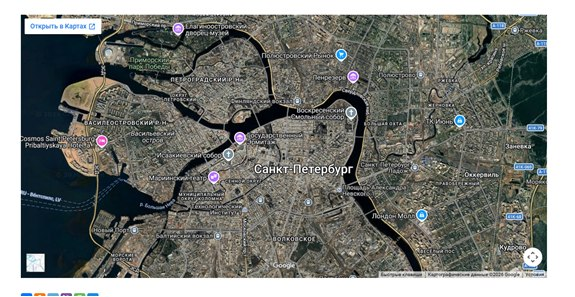
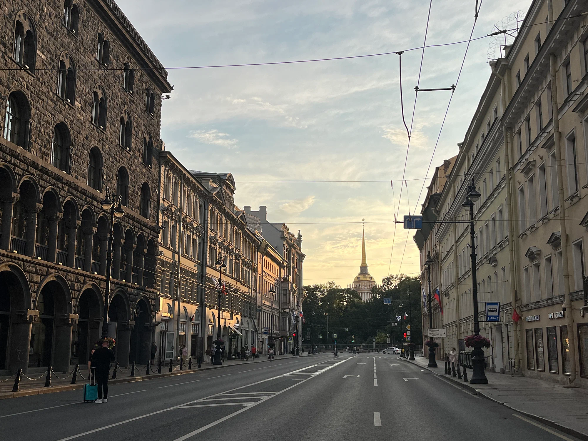
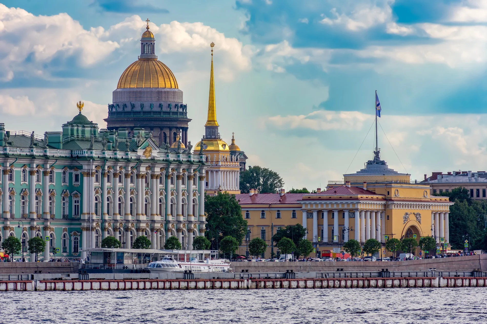
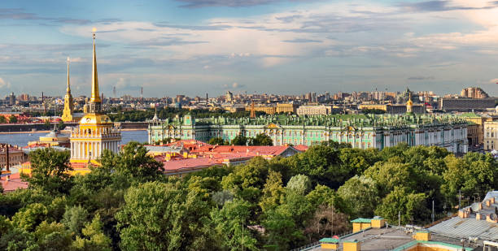
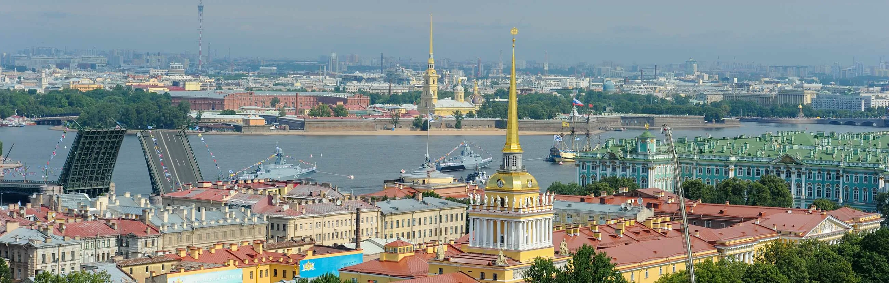
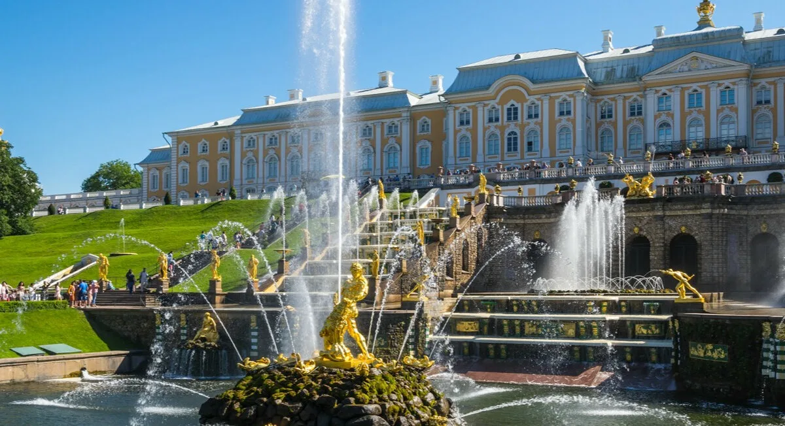
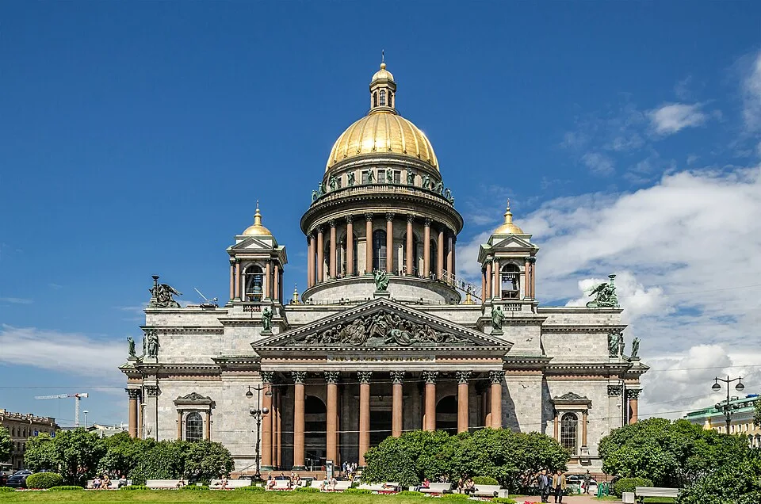
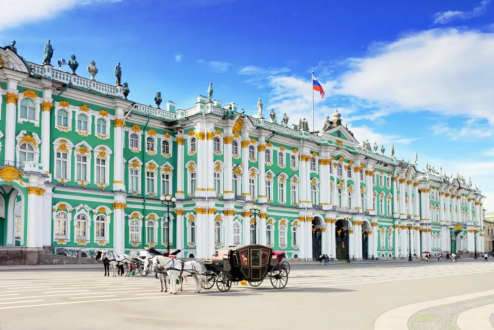

Санкт-Петербург — второй по численности населения город России. Город федерального значения, административный центр Северо-Западного федерального округа.
Расположен на северо-западе страны, на побережье Финского залива и в устье реки Невы. Граничит с Ленинградской областью, также имеет морские границы с Финляндией и Эстонией.
Основан 16 (27) мая 1703 года царём Петром I. В 1714–1728 и 1732–1918 годах был столицей Российского государства.
Санкт-Петербург — важный economicеский, научный и культурный центр России, крупный транспортный узел.
Исторический центр города и связанные с ним комплексы памятников входят в список объектов всемирного наследия ЮНЕСКО.
Среди наиболее значимых культурно-туристических объектов: Эрмитаж, Кунсткамера, Мариинский театр, Российская национальная библиотека, Русский музей, Петропавловская крепость, Исаакиевский собор, Невский проспект.

Карта города, вид со спутника: https://online-maps.pro
16 (27) мая 1703 года — официальная дата основания Санкт-Петербурга. В этот день на Заячьем острове в устье реки Невы была заложена Петропавловская крепость — первое сооружение будущего города.
Название города выбрано Петром I в честь святого апостола Петра, небесного покровителя царя. В 1720 году название Санкт-Питербурх изменили на Санкт-Петербург.







Державный град, возвышайся над Невою,
Как дивный храм, ты сердцам открыт!
Сияй в веках красотой живою,
Дыханье твоё Медный всадник хранит.
Несокрушим — ты смог в года лихие
Преодолеть все бури и ветра!
С морской душой, Бессмертен, как Россия,
Плыви, фрегат, под парусом Петра!
Санкт-Петербург, оставайся вечно молод!
Грядущий день озарён тобой.
Так расцветай, наш прекрасный город!
Высокая честь — жить единой судьбой!